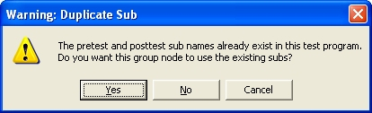

Groups may be added to the test program to help section your tests into meaningful and manageable parts. Test groups are analogous to directory folders on a computer disk.

'---------------------------------------------------- ' Parent : Root ' Description: Pre Group Test: A group for my test '---------------------------------------------------- Sub PreGroup1() ' ToDo: Put your initialization code here End Sub'---------------------------------------------------- ' Parent : Root ' Description: Post Group Test: '---------------------------------------------------- Sub PostGroup1() ' ToDo: Put your initialization code here End Sub
Notes:
Two nodes with the same name cannot exist within the same group (i.e., at the same tree level). Therefore, if you try to add a group node to a group that already contains a node with the same name, you will receive an error message and the new node will not be added. (Node names are case-sensitive.)
If your new group node's VBScript methods have the same names as previously defined methods, the following message box appears:

If you click "Yes", new PreTest and PostTest subroutines will not be created. Instead, the new group node will execute the existing subroutines when the test program is run. It is OK to have two or more nodes call the same VBScript method.
If you click "No", new PreTest and PostTest subroutines will be created, but a number will be appended to the end of the new names to make them unique. For example, if the node name is Group1, the names PreGroup1_1, PreGroup1_2, etc. will be tried until a unique name is found.
If you click "Cancel", the new node is not created.
Astronics Test Systems
Last updated on 2/20/07 by L. Anhalt